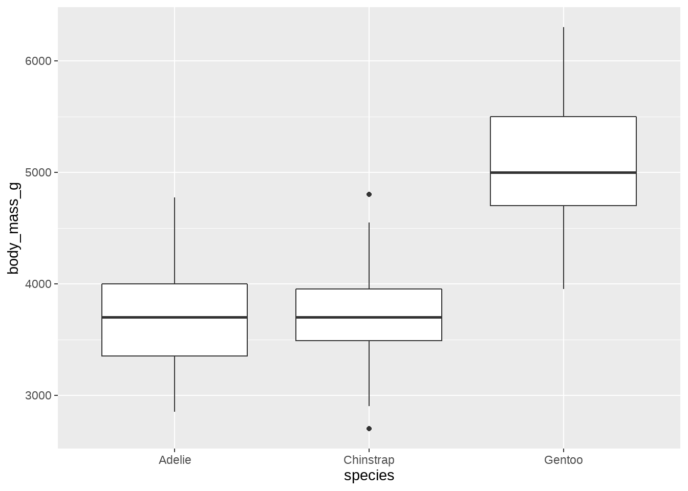
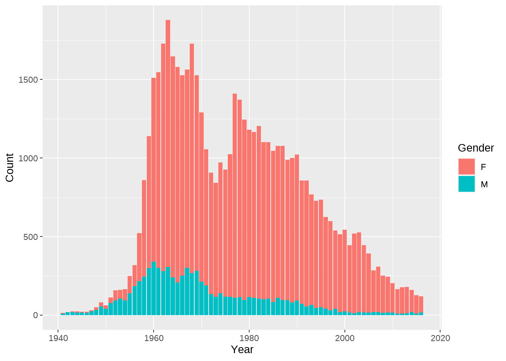
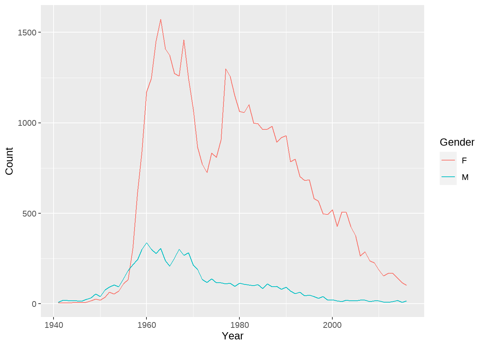
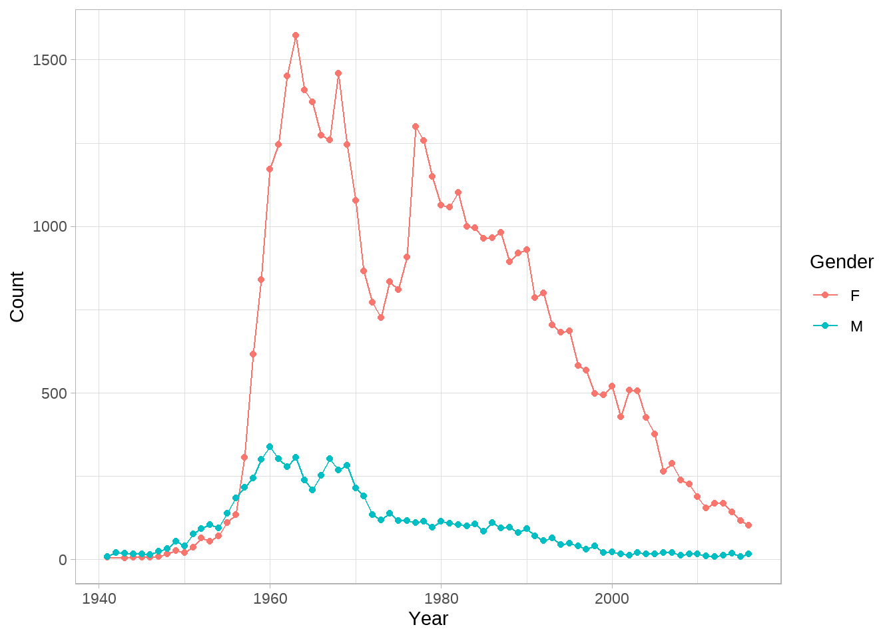

{flair}: Decorate your source code.
<img src='flair_hex.png' style='width:200px;height:200px;'>
By Kelly Bodwin
January 1, 0001
| class: center, middle, inverse |
| ## The main idea: |
Source code needs highlighting in R Markdown-based presentations
–
This can be an un-reproducible task
| #### Hey kids, let’s learn about boxplots! |
| ggplot(penguins, aes(x = species, y = body_mass_b)) + geom_histogram() |
|  |
class: center
Me trying to highlight my code examples for lecture…

class: inverse, center # How to add flair to your code

| # Step One: ## Regular ol’ code chunk (with a name) |
| ```` |
| ```{r how_to_pipe, include = FALSE} |
| penguins %>% group_by(species) %>% summarize(mean(body_mass_g)) |
| ``` |
| ```` |
Step Two:
Reference chunk by name with decorate
decorate(“how_to_pipe”) %>%
| # Step Three: |
 |
Step Three:
Add your flair with flair_* functions
decorate(“how_to_pipe”) %>%
flair(“%>%”) %>%
flair_funs(color = “cornflowerblue”)
| # You’re done! |
r decorate("how_to_pipe") %>% flair("%>%") %>% flair_funs(color = "cornflowerblue") |
penguins %>% |
| ``` |
## # A tibble: 3 x 2
## species mean(body_mass_g)
## |
| ``` |
class: inverse, center, middle
FAQ
| # FAQ: |
### Does this work in ioslides, xaringan, etc? |
YES! Any R-markdown based document.
–
What happens when you run in console/Rmd source?
–
Source code w/flair is previewed in viewer pane.
–
Does this work with LaTeX knitting?
–
Not yet, sorry.
| class: inverse, center, middle |
 |
class: center, middle, inverse
Trick 1:
Emphasize small code differences
Original code chunk
```{r geoms, include=FALSE}
babynames %>%
ggplot(aes(x = Year, y = Count, fill = Gender)) +
geom_col()
babynames %>%
ggplot(aes(x = Year, y = Count, color = Gender)) +
geom_line()
```| ## flair code chunk |
```{r, echo = FALSE} decorate("geoms") %>% flair("_col") %>% flair("fill = ") %>% flair("_line") %>% flair("color = ") ``` |
Results
babynames %>%
ggplot(aes(x = Year, y = Count, fill = Gender)) +
geom_col()

Results
babynames %>%
ggplot(aes(x = Year, y = Count, color = Gender)) +
geom_line()

Beautiful slide by [@AndrewHeiss](https://twitter.com/andrewheiss)

| ## Flair the text: |
```{r, results = "asis", echo = FALSE} "This model has a response variable, two predictors, and an interaction term." %>% flair("response variable", color = "deeppink") %>% flair("predictors", color = "cornflowerblue") %>% flair("interaction term", color = "orange") %>% flair_all(before = "<h4>", after = "</h4>") %>% cat() ``` |
Flair the code:
```{r lm, include = FALSE}
mod <- lm(Count ~ Gender + Year + Gender:Year, data = babynames)
summary(mod)
```
```{r, echo = FALSE}
decorate("lm") %>%
flair("Count", color = "deeppink") %>%
flair("Gender:Year", color = "orange") %>%
flair_rx("Gender |Year ", color = "cornflowerblue")
```Results
This model has a response variable, two predictors, and an interaction term.
mod <- lm(Count ~ Gender + Year + Gender:Year, data = babynames)
summary(mod)
##
## Call:
## lm(formula = Count ~ Gender + Year + Gender:Year, data = babynames)
##
## Residuals:
## Min 1Q Median 3Q Max
## -625.27 -128.36 -13.67 155.13 943.86
##
## Coefficients:
## Estimate Std. Error t value Pr(>|t|)
## (Intercept) 837.0953 3555.4360 0.235 0.814
## GenderM 2769.6513 4980.9342 0.556 0.579
## Year -0.1064 1.7965 -0.059 0.953
## GenderM:Year -1.6660 2.5171 -0.662 0.509
##
## Residual standard error: 337.2 on 147 degrees of freedom
## Multiple R-squared: 0.3876, Adjusted R-squared: 0.3751
## F-statistic: 31.02 on 3 and 147 DF, p-value: 1.357e-15
A class quiz:
library(ggplot2)
babynames %>%
ggplot(aes(y = , x = , color = )) +
geom () +
geom () +
theme ()

| ## The flair chunk: |
` |
| ``` ```` |
(Notice: flair_rx()) |
class: inverse, center, middle # Find the package:
install.packages("flair")
github.com/kbodwin/flair
Find me:
@KellyBodwin
www.kelly-bodwin.com
How flair works
with_flair() object
decorate()creates awith_flair()objectwith_flair()is a new S3 class for the package.- structure: list, output of
knit_child() printmethod: prints as-is
- structure: list, output of
# How flair works
## decorate() |
The decorate() function… |
| * tracks the current state of R Markdown (i.e. knitting versus interactive) |
| * tracks global options and chunk-specific options |
* does a lot of regex searching to find flair chunks |
* knits the flair chunks individually, using appropriate options |
How flair works
flair()
The flair() functions…
Find the source code elements in the
with_flair()object.Wrap html tags around the appropriate text.
Return a
with_flair()object.
# How flair works
## The whole routine |
| 1. Pre-knit the “child” chunks into html. |
| 2. Find flair-ed text and wrap html. |
| 3. Print as-is. |
class: center, middle, inverse
How you can help
–
Syntax highlighting!
| # Syntax highlighting |
| Ordinary knitting process: |
| * R markdown/knitr runs code; stores source text and output in list. |
- Pandoc process markdown and “fences” source code:
```r
```–
- JavaScript
highlight.jsprocesses source text to add syntax highlighting.
| # Syntax highlighting |
| What this means: Syntax highlighting happens on the browser end. |
Flair happens at the knitting step.
–
Can we somehow apply both to the source code?
–

class: center, middle, inverse # Find the package:
install.packages("flair")
github.com/kbodwin/flair
Find me:
@KellyBodwin
www.kelly-bodwin.com
- Posted on:
- January 1, 0001
- Length:
- 4 minute read, 813 words
- See Also: